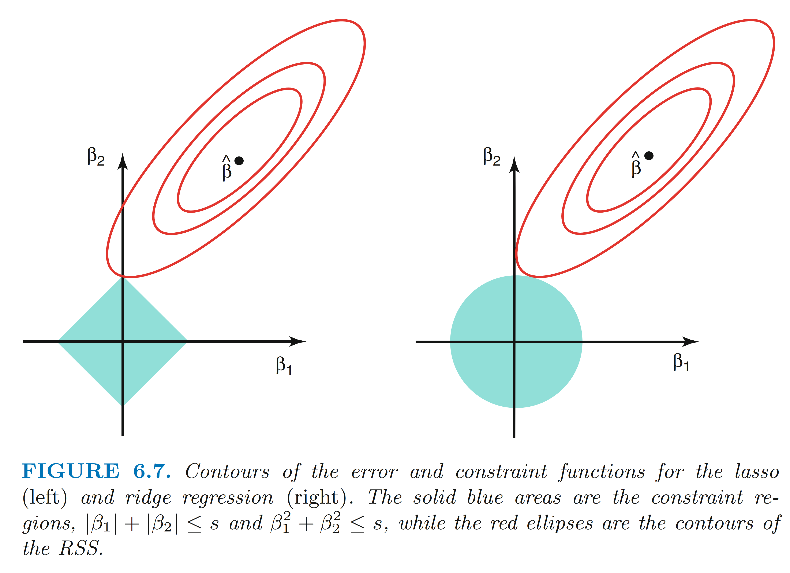
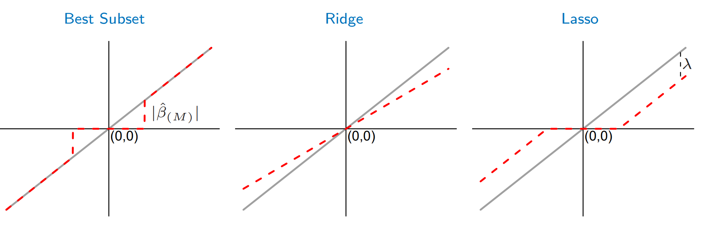
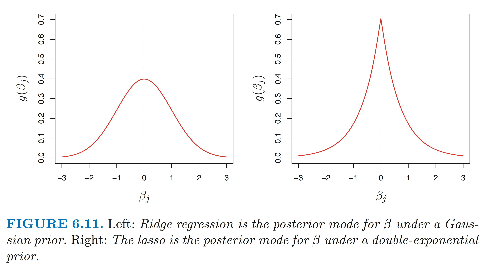
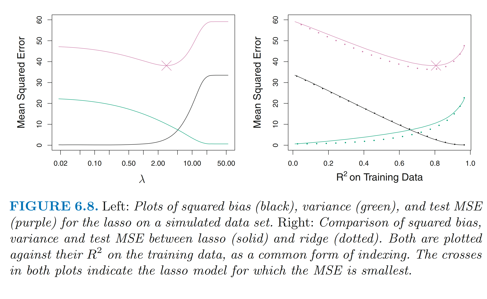
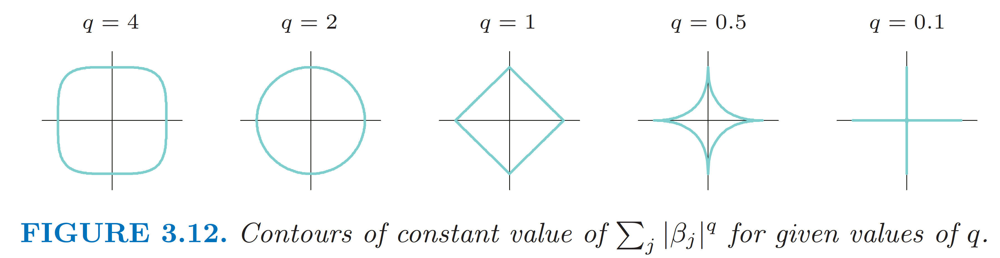
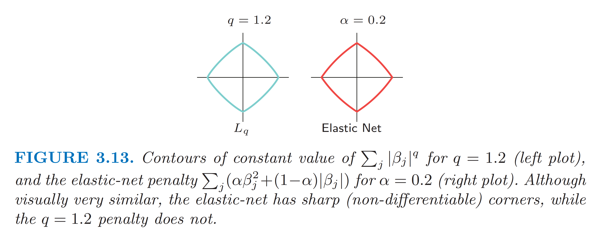
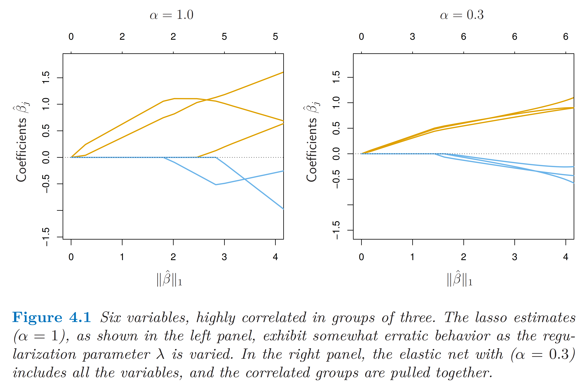
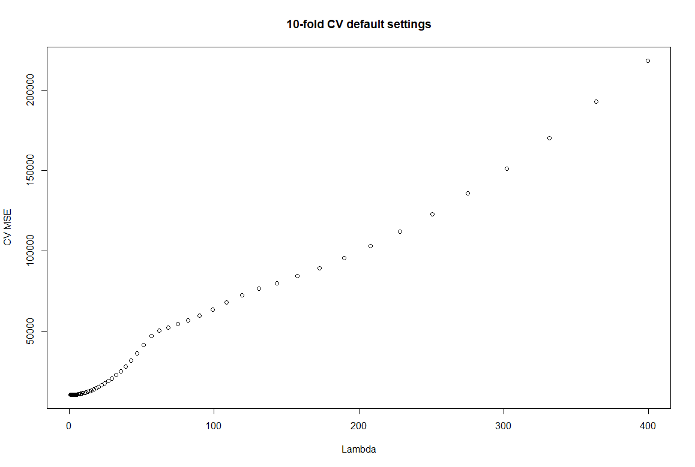
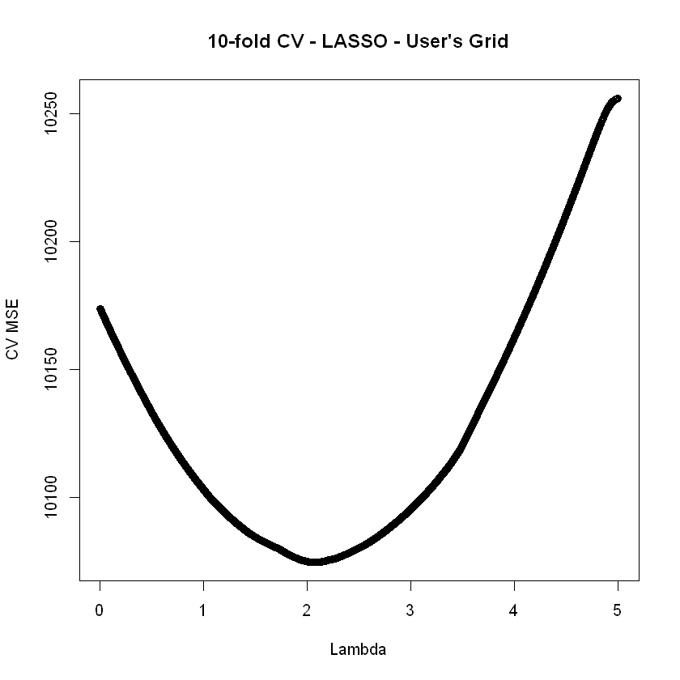
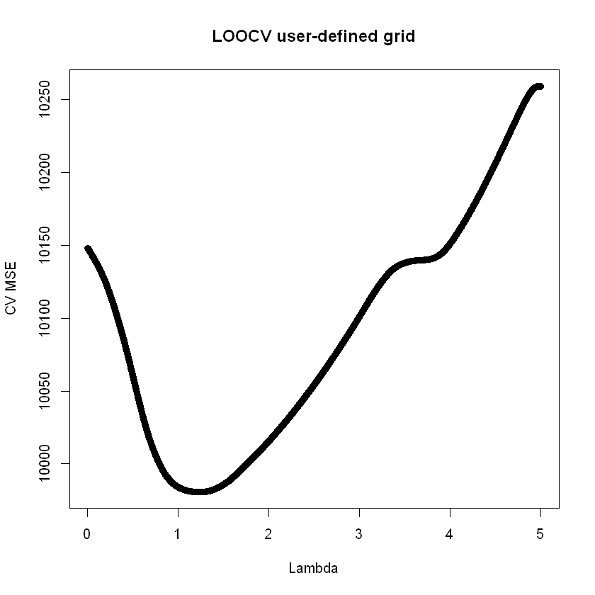

Chapter 4 — Regression with penalization: LASSO
EC4308 · Machine Learning and Economic Forecasting
Vu Thanh Hai
NUS Department of Economics
CHAPTER FOUR
Regression with penalization: LASSO
- Module Code: EC4308
- Module title: Machine Learning and Economic Forecasting
- Instructor: Vu Thanh Hai
- Reference: ISLR Ch. 6.2.2–6.2.3; 6.4.3–6.4.4
- Acknowledgement: I adapt Dr. Denis Tkachenko’s notes with some minor modifications. Thanks to Denis!
Motivation: drawbacks of Ridge
- So far we saw 2 approaches to regularizing linear regression.
- Subset selection resulted in very interpretable models, and estimated those models without much bias. Two issues: 1) potentially high variance due to discrete nature of the problem; 2) computationally costly for \(P > 30\) thus might need some clever tricks.
- Ridge regression results in low variance predictions, but coefficient estimates are biased due to shrinkage to 0. Also, includes all \(P\) predictors in the models – loss of interpretability.
- Need to find a way to keep the good features of both methods while mitigating the drawbacks.
Motivation: Idea of LASSO
- Tibshirani (1996) proposed an alternative shrinkage procedure with the idea to do just that!
- Least Absolute Shrinkage and Selection Operator (LASSO).
- The main idea is to shrink AND select: the coefficients are shrunk away from OLS counterparts, but some are shrunk EXACTLY to 0.
- Computational complexity can be kept under control.
- VERY popular in economics, particularly due to the model selection aspect. Also, some theories are derived for LASSO under some assumptions.
LASSO method
- LASSO is similar to Ridge at first glance, with a small but subtle difference:
\[\sum_{i=1}^{N}\Big(y_i-\beta_0-\sum_{j=1}^{P}\beta_j x_{ij}\Big)^2+\lambda\sum_{j=1}^{P}|\beta_j| = RSS+\lambda\sum_{j=1}^{P}|\beta_j|\]
- \(\lambda \ge 0\) is again a tuning parameter and the 2nd term is the shrinkage penalty.
- The penalty is the \(L_1\)-norm penalty: \(\|\boldsymbol\beta\|_1=\sum_{j=1}^{P}|\beta_j|\)
- Equivalent to solving the problem:
\[\min_{\{\beta_i\}_{i=0}^{P}}\sum_{i=1}^{N}\Big(y_i-\beta_0-\sum_{j=1}^{P}\beta_j x_{ij}\Big)^2 \;\text{ s.t. }\; \sum_{j=1}^{P}|\beta_j|\le t\]
Some details
- The summation over betas goes from 1 to P – intercept is not penalized. For this reason, all the variables are usually de-meaned before using LASSO estimation.
- LASSO, like Ridge, is not scale invariant. All the regressors must be in the same units: for this reason, typically all the X’s are standardized.
- LASSO is not invariant to linear transformations of regressors. E.g., LASSO on \((X_1, X_2)\) is not the same as on \((X_1 - X_2, X_2)\) despite identical OLS solutions. This is a concern since we do not know which form should enter the regression (ending up with trial and error).
- Unlike Ridge, the LASSO estimator does not have closed form solution, even though the problem is convex. Computational cost is about the same as Ridge.
OLS on a “budget”:
- The LASSO problem: \[\min_{\{\beta_i\}_{i=0}^{P}}\sum_{i=1}^{N}\Big(y_i-\beta_0-\sum_{j=1}^{P}\beta_j x_{ij}\Big)^2 \;\text{ s.t. }\; \sum_{j=1}^{P}|\beta_j|\le t\]
- The Ridge problem: \[\min_{\{\beta_i\}_{i=0}^{P}}\sum_{i=1}^{N}\Big(y_i-\beta_0-\sum_{j=1}^{P}\beta_j x_{ij}\Big)^2 \;\text{ s.t. }\; \sum_{j=1}^{P}\beta_j^2\le \tau\]
- The best subset selection problem: \[\min_{\{\beta_i\}_{i=0}}\sum_{i=1}^{N}\Big(y_i-\beta_0-\sum_{j=1}^{P}\beta_j x_{ij}\Big)^2 \;\text{ s.t. }\; \sum_{j=1}^{P}\mathbf{I}(\beta_j\neq 0)\le s\]
Shrinkage interpretation (under special case)
- Consider the orthonormal regressors case: \(\boldsymbol{X}'\boldsymbol{X}=\boldsymbol{I}_P\)
- We assume \(P < N\).
- OLS estimator given by (derived in the last lecture): \[\hat{\boldsymbol\beta}^{OLS}=(\mathbf{X}'\mathbf{X})^{-1}\mathbf{X}'\mathbf{y}=\mathbf{I}_P\mathbf{X}'\mathbf{y}=\mathbf{X}'\mathbf{y}\]
- Element-wise: \[\hat\beta_j^{OLS}=\sum_{i=1}^{N}x_{ij}y_i\]
Shrinkage interpretation (under special case)
- Ridge regression chooses betas to minimize: \[\hat{\boldsymbol\beta}_\lambda^{R}=\arg\min\,(\mathbf{y}-\mathbf{X}\boldsymbol\beta)'(\mathbf{y}-\mathbf{X}\boldsymbol\beta)+\lambda\boldsymbol\beta'\boldsymbol\beta\]
- The solution is familiar from the last class: \[\hat{\boldsymbol\beta}_\lambda^{R}=\frac{\hat{\boldsymbol\beta}_{OLS}}{(1+\lambda)}\]
- Elementwise: \[\hat\beta_j^{R}=\frac{\hat\beta_j^{OLS}}{(1+\lambda)}\]
Shrinkage interpretation (under special case)
- LASSO chooses betas to minimize: \[\hat{\boldsymbol\beta}_\lambda^{L}=\arg\min_{\beta}\,(\mathbf{y}-\mathbf{X}\boldsymbol\beta)'(\mathbf{y}-\mathbf{X}\boldsymbol\beta)+\lambda\|\boldsymbol\beta\|_1\]
- The solution is : \[\hat\beta_j^{L}(\lambda)=\begin{cases}\hat\beta_j^{OLS}-\lambda/2 & \text{if } \hat\beta_j^{OLS}>\lambda/2\\[4pt] \hat\beta_j^{OLS}+\lambda/2 & \text{if } \hat\beta_j^{OLS}<-\lambda/2\\[4pt] 0 & \text{if } \big|\hat\beta_j^{OLS}\big|\le\lambda/2\end{cases}\]
Shrinkage interpretation (under special case)
- Now you can see how the nature of shrinkage differs between Ridge and LASSO.
- Ridge regression shrinks OLS coefficients by the same proportion.
- LASSO shrinks coefficients to zero by a constant amount \(\lambda/2\). If the coefficient is smaller than that in absolute value, it is set to zero – soft thresholding. (Best subset uses hard thresholding.)
- NOT under special case: When X is not orthonormal, the story changes of course, but the intuition of this special case remains: shrinkage occurs in roughly the same manner.
Interactive demo: soft vs. hard thresholding
Try: (1) raise \(\lambda\) and watch which coefficients hit exactly 0 under each rule; (2) compare the gap between the grey 45° line and each coloured curve — proportional (Ridge) vs. constant (LASSO); (3) find a \(\lambda\) where LASSO and best subset keep the same variables but report different sizes.
Shrinkage and selection

Shrinkage and selection

Note: These diagrams are for the special case \(X'X=I_P\)
Shrinkage and selection

Bias/variance tradeoff

LASSO vs. Ridge
- Though often effective in practice, LASSO has some shortcomings.
- If there is a group of highly correlated variables (and the group structure is unknown!), LASSO tends to select one of them, while it would make sense to have all in the model.
- LASSO selects at most \(N\) variables before it saturates in the \(P > N\) case.
- When variables in \(\mathbf{X}\) are correlated, Ridge tends to outperform LASSO empirically.
- It would seem a compromise between Ridge and LASSO could be interesting.
LASSO – Ridge compromise ?
- One way to achieve such compromise is to consider the nesting penalty representation:
\[\sum_{i=1}^{N}\Big(y_i-\beta_0-\sum_{j=1}^{P}\beta_j x_{ij}\Big)^2+\lambda\sum_{j=1}^{P}|\beta_j|^{q}\]

LASSO – Ridge compromise ?
- Nesting penalty: \[\sum_{i=1}^{N}\Big(y_i-\beta_0-\sum_{j=1}^{P}\beta_j x_{ij}\Big)^2+\lambda\sum_{j=1}^{P}|\beta_j|^{q}\]
- The values of \(q\) between \(1\) and 2 suggest compromise between LASSO and Ridge (why?).
- For \(q > 1\) the function is differentiable at zero, so the selection ability of the LASSO is lost.
- In practice, this method does not work so well.
- Computation is more costly for general \(q\) than Ridge and LASSO. Thus, we can look at a better alternative.
The Elastic Net
- Motivated by the above shortcomings, Zou and Hastie (2005) proposed the approach they termed an “elastic net”:
\[\sum_{i=1}^{N}\Big(y_i-\beta_0-\sum_{j=1}^{P}\beta_j x_{ij}\Big)^2+\lambda\sum_{j=1}^{P}\Big(\alpha\beta_j^2+(1-\alpha)\big|\beta_j\big|\Big)\]

NOTE: \(0<\alpha<1\)
The Elastic Net
- Motivated by the above shortcomings, Zou and Hastie (2005) proposed the approach they termed an “elastic net”: \[\sum_{i=1}^{N}\Big(y_i-\beta_0-\sum_{j=1}^{P}\beta_j x_{ij}\Big)^2+\lambda\sum_{j=1}^{P}\Big(\alpha\beta_j^2+(1-\alpha)\big|\beta_j\big|\Big)\]
- The elastic net selects variables like the LASSO and shrinks the coefficients together the coefficients of correlated predictors like ridge: Make it harder to push \(\beta\) to zero, while retaining sharp corners (thus some coefficients can be shrunk to zero)
- It has similar computational cost as that of LASSO.
- Selection of \(\alpha\) and \(\lambda\) can be done jointly by K-fold CV.
The Elastic Net Illustration

Interactive demo: why corners give zeros
Try: (1) pick LASSO and drag the OLS point — when does the solution land on an axis (a coefficient exactly 0)? (2) switch to Ridge with the same point; (3) choose \(L_q\) and move \(q\) from 1 to 1.2 — do the zeros survive? (4) choose Elastic Net — corners stay for any \(\alpha<1\).
Choice of \(\lambda\) (LASSO): CV
- Again, a critical choice that determines performance.
- In statistical literature, most popular approach is cross-validation: typically K-fold on a grid for \(\lambda\).
- Note: cannot do the LOOCV computational “trick” since no closed form solution – makes it computationally infeasible for big problem.
- Commonly found that results can be sensitive across multiple runs – prudent to increase K to mitigate this variation. Also, can try CV many times and choose value of \(\lambda\) that occurs the most)
- Chernozhukov, Chetverikov and Liao (2020) provide theoretical justification: estimation error of CV converges to zero under some conditions in the Normal model. (just know that LASSO is theoretically justified)
Choice of \(\lambda\): The “1 SE rule” for CV
- When doing CV (in a penalized regression setting), practitioners often choose \(\lambda\) using the so-called “one standard error rule”.
- The idea is to calculate the standard error of the estimated MSE for each \(\lambda\) on the grid, and then select the largest \(\lambda\) (i.e., the smallest model) for which the estimated CV MSE is within one standard error of the minimum-MSE \(\lambda\) choice.
- Please note that standard error of the estimated MSE is not standard deviation of \(\lambda\). (There is no ____________ of \(\lambda\))
- The logic here is that models within 1SE bound are “equally good” more or less, so we want to choose the simplest one.
Choice of \(\lambda\): plug-in rules
- Under some assumptions, theoretically optimal rules (for different cases) for the tuning parameter choice can be derived (Belloni, Chernozhukov and Hansen (2010, 2012)).
- E.g., for the baseline case assuming homoscedasticity and uncorrelated X’s, we would use: \[\lambda = 2c\sqrt{n}\,\hat\sigma\,\Phi^{-1}\big(1-\gamma/(2p)\big)\]
- There are versions of these for the correlated regressors case, and for heteroscedasticity.
- Implemented in the hdm() package under ‘rlasso’.
Statistical properties
- Asymptotic properties are derived allowing for P >> N.
- Sparsity is the key assumption: true model has S nonzero coefficients.
- If sparse, under some regularity conditions, LASSO performs consistent model selection.
- The coefficients are biased, however.
- There are ways to mitigate this bias: 1) post-LASSO least squares; 2) Adaptive LASSO; 3) Smoothly Clipped Absolute Deviations (SCAD).
Post-LASSO estimation
- Belloni and Chernozhukov (2013) provide a very intuitive (and computationally simple) idea: undo the shrinkage bias by applying the unpenalized estimator (OLS) using only the variables selected by LASSO.
- This is called post-LASSO estimation.
- Results suggest it works at least as good as LASSO and sometimes much better.
- Works well with theoretically motivated plug-in penalty (\(c = 1.1\) is suggested; for what is \(c\), see the formula in slide 24).
- Or we can choose \(\lambda\) by CV even though not justified theoretically.
Note on Sparsity
- Very fashionable assumption and way of thinking.
- Key assumption for justifying theory, but not really based on reality.
- Frequently hear people say “imposing sparsity” in this literature: this can be too simplistic an assumption.
- In practice, this implies that few coefficients are big, the remainder is zero or small. May not make much sense in some settings.
- Many coefficients could be nonzero AND small – a challenge for LASSO-type theory.
Note on screening of regressors
- Though LASSO can handle high P, it may not be desirable to consider too many redundant regressors. If so, we can do some pre-screening:
- Fan and Lu (2008) propose a sure independence screening (SIS) procedure: rank variables by marginal correlations and only consider d most highly correlated to Y variables.
- Recommend \(d = N - 1\) or \(d = N/\log(N)\).
- Under strong conditions, can be proven to work theoretically (i.e., doesn’t discard useful variables).
- Simple idea that can make life much easier in large problems.
Application
- Data from the ISLR package on credit card balances and 10 predictors, \(N = 400\).
| ID |
Identification |
| Income |
Income in $10,000’s |
| Limit |
Credit limit |
| Rating |
Credit rating |
| Cards |
Number of credit cards |
| Age |
Age in years |
| Education |
Number of years of education |
| Gender |
A factor with levels Male and Female |
| Student |
A factor with levels No and Yes indicating whether the individual was a student |
| Married |
A factor with levels No and Yes indicating whether the individual was married |
| Ethnicity |
A factor with levels African American, Asian, and Caucasian indicating the individual’s ethnicity. |
| Balance |
Average credit card balance in $ |
Application: R package glmnet()
- Fit LASSO regression using the
glmnet() package.
- Basic syntax:
fit = glmnet(x, y, alpha = 1, lambda = grid)
alpha=1 yields LASSO, while values between 0 and 1 correspond to the Elastic Net. alpha = 0 yields the ridge case.- If
lambda not defined, glmnet() will produce its own grid. May not be optimal – need to experiment with user-defined grids!
glmnet() also delivers the “1SE rule” lambda automatically under “lambda.1se” (the best is under “lambda.min”).
Application: R package hdm()
- Fits LASSO using theoretical plug-in choices of \(\lambda\) via the
rlasso() function.
- Basic syntax:
fit = rlasso(Y~X, post=TRUE)
post=TRUE performs post-LASSO estimation. Set FALSE for the plug-in LASSO estimates.- Multiple options for penalty choice etc. – see code for details. The default works well in many cases since it adjusts for heteroskedasticity (however, it assumes uncorrelated features).
Application: effect of \(\lambda\) on coefficients
| Income |
0 |
0 |
0 |
-0.232 |
-2.156 |
-7.903 |
-7.992 |
| Limit |
0 |
0 |
0.0003 |
0.022 |
0.051 |
0.167 |
0.185 |
| Rating |
0 |
1.423 |
1.899 |
1.906 |
1.915 |
1.523 |
1.264 |
| Student |
0 |
0 |
87.99 |
235.607 |
281.008 |
423.143 |
426.817 |
| \(L_1\)-norm |
0 |
1.423 |
89.889 |
237.77 |
285.13 |
469.203 |
482.516 |
Note that these results are based on a random seed that is different from what we have in the codes provided. But they are very close.
Application: 10-fold CV (default)

Automatically chooses \(\lambda\) = 1.988
Application: 10-fold CV (user grid)

Chooses \(\lambda\) = 2.03
Application: LOOCV

Chooses \(\lambda\) = 1.217
Application: test set MSE
| Elastic Net (alpha=0.5) |
2.009 |
10098.10 |
| Post-RLASSO |
- |
10281.33 |
| RLASSO (default) |
- |
10466.18 |
| Post-LASSO 10-fold CV |
8.806 |
10155.77 |
| LASSO 10-fold CV (user) |
2.03 |
10041.70 |
| LASSO LOOCV |
1.21 |
10085.07 |
| Ridge 10-fold CV (user) |
1.5 |
10122.75 |
| Ridge LOOCV |
0.658 |
10145.75 |
| OLS |
0 |
10147.65 |
| Best subset |
- |
10155.78 |
Application: final model coefficients
| Income |
-7.726 |
-7.992 |
| Limit |
0.190 |
0.185 |
| Rating |
1.128 |
1.264 |
| Student |
419.798 |
426.817 |
| Cards |
17.098 |
17.789 |
| Age |
-0.477 |
-0.567 |
| Education |
0 |
-0.188 |
| Female |
-4.434 |
-9.964 |
| Married |
0 |
1.367 |
| Asian |
8.160 |
14.132 |
| Caucasian |
0 |
2.251 |